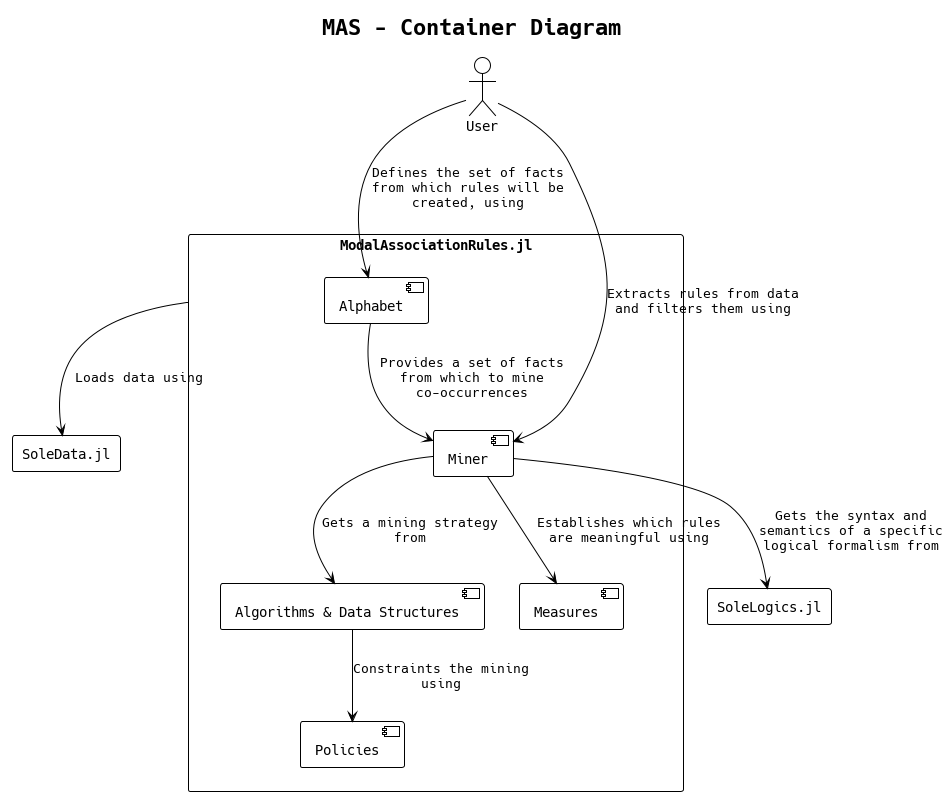

ModalAssociationRules
Introduction
Welcome to the documentation for ModalAssociationRules (or MAS), a Julia package for mining association rules.
Installation
To install MAS, simply launch:
using Pkg
Pkg.add("ModalAssociationRules")Feature Summary
- Define atomic facts, called items, that can be true or false with respect to some instance data; for example, given a collection of signals
I=[[1,2,3], [4,5,6], [7,8,9]], an itempcould encode the fact thatsum(I[2]) < 16. - Enhance the expressivity of each item and combine them in sets, called itemsets, leveraging more-than-propositional logical formalisms; considering the instance data
Iabove, for example, an itemqcould encode the fact thatmean(I[3]) = 8andq and after pencodes the fact thatqis true for the i-th dimension of the instance andpis true at the same time on the (i+1)-th dimension. - Extract the association rules hidden in data; for example, the rule
p => qencodes the fact that, ifpis true, thenqis true too. The extraction process is easily configurable via aMinerobject, and can be executed with the parallel implementation of state-of-the-art algorithms. - Analyze and recap the extract rules in a succinct manner.
Diagrams
What follows are the system and container context diagrams, delineating the environment of this package and its main components from an high level perspective.

As shown in the schema above, MAS interfaces with two main dependencies. In fact, while the main purpose of this package is to extract constrained co-occurrence relations from data, the representation layer of logical facts and data is almost entirely provided by two packages. SoleLogics.jl provides both the syntactical and semantical aspects related to various logical formalisms; the q and after p example in the Feature Summary section is not casual, and refers to Halpern and Shoham's modal logic for time intervals, which SoleLogics provide. SoleData.jl is used to automatically create Kripke structures from the given data, that is, expliciting the latter in the form of relational data.

Each of the components above is considered in the Advanced usage, Hands on and Contributing sections. The first one is a complement to the Getting started section, while the second one is designed for developers that who are willing to contribute to this package.
About
The package is developed by the ACLAI Lab @ University of Ferrara.
ModalAssociationRules.jl lives in the context of Sole.jl, an open-source framework for symbolic machine learning, originally designed for machine learning based on modal logics (see Eduard I. Stan's PhD thesis 'Foundations of Modal Symbolic Learning' here).